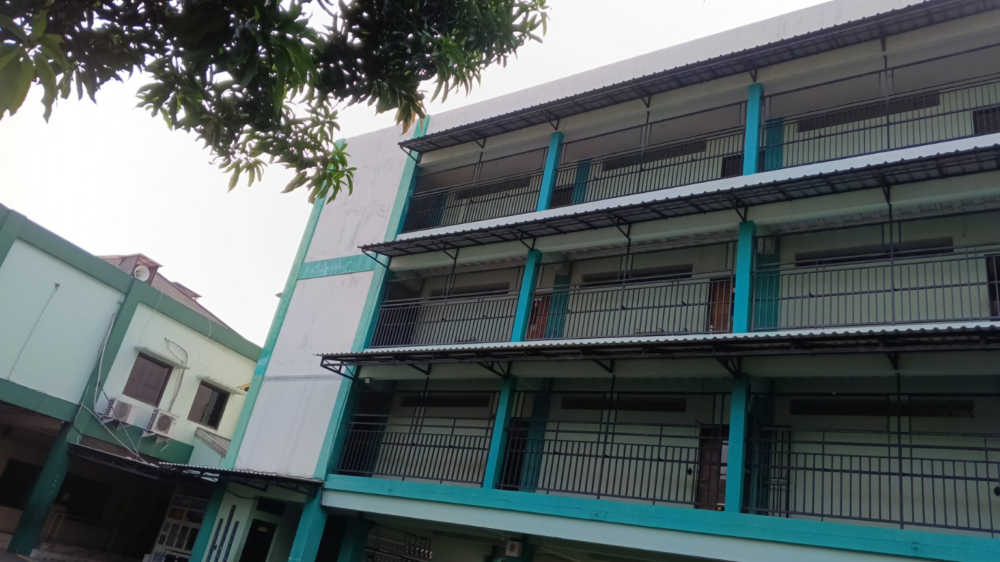

Kajian Islam
Penguatan pemahaman dan praktik nilai-nilai Islam dalam keseharian.

PENERIMAAN PESERTA DIDIK BARU • 2027/2028
Mari daftarkan putra-putri Anda untuk bergabung bersama NUR IMAN ISLAMIC SCHOOL dalam lingkungan pendidikan yang Islami, nyaman, dan berkarakter.
Lihat PPDBHubungi KamiTENTANG KAMI
NUR IMAN ISLAMIC SCHOOL / PKBM NUR IMAN hadir untuk membangun lingkungan belajar yang Islami, aman, nyaman, dan mendukung perkembangan akademik serta karakter peserta didik.
Proses pendidikan diarahkan pada penguatan aqidah, ibadah, akhlak mulia, kemampuan akademik, serta kecintaan kepada Al-Qur'an dan As-Sunnah.
PROGRAM UNGGULAN
Penguatan pemahaman dan praktik nilai-nilai Islam dalam keseharian.
Membimbing kemampuan membaca Al-Qur'an dan hafalan secara bertahap.
Suasana belajar yang nyaman dan mendukung tumbuh kembang peserta didik.
Membangun kebiasaan baik, tanggung jawab, dan kemandirian.
Lingkungan sekolah yang aman, bersih, dan mendukung proses belajar.
FASILITAS
PPDB 2027/2028
Biaya Masuk
Biaya Masuk
Untuk informasi pendaftaran dan persyaratan, silakan hubungi Admin PKBM Nur Iman.
KONTAK
Alamat
Jl Tumaritis 1 No.8, Harjamukti, Cimanggis, Depok
Admin PKBM Nur Iman
Hubungi WhatsApp resmi sekolah untuk pendaftaran.